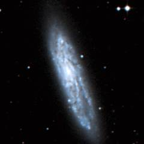
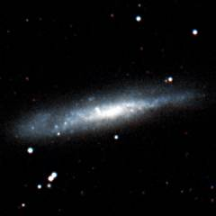
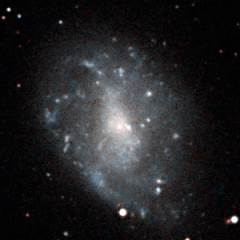
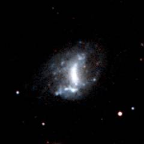
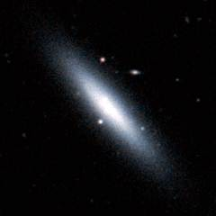
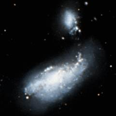
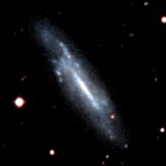
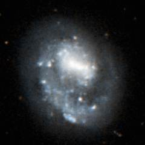
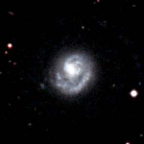

The Canes II Group is a prominant group of galaxies 30 million light years away in Canes Venatici and it contains the large M106 galaxy. This group lies directly behind the Canes I group, and there are many groups of galaxies in this area of the sky which ultimately connect to the massive Virgo cluster fifty million light years away.
Below - three Canes II group galaxies. NGC 4096 (left) and NGC 4144 (centre) are two very similar spiral galaxies seen from different angles. NGC 4242 (right) is an irregular galaxy with a central bar and faint signs of spiral structure.
|  |  |  |
| NGC 4096 | NGC 4144 | NGC 4242 |
This is a list of the main galaxies in the Canes II group. The Canes II group lies directly behind the Canes I group and it can be hard to determine which galaxies belong to which group. The two groups are probably connected so a precise boundary may be somewhat arbitary.
1 2 3 4 5 6 7 8 9
Name Equatorial Blue Type Size Size RV Other
Coordinates Mag (') kly km/s Names
RA Dec
NGC 4096 12 06.0 +47 29 11.5 SBc 6.5 55 770
NGC 4144 12 10.0 +46 27 12.2 SBc 6.0 55 481
UGC 7267 12 15.4 +51 22 15.3 Sd 1.7 15 660
UGC 7271 12 15.6 +43 26 15.5 Sc 1.6 15 772
UGC 7298 12 16.5 +52 13 17? Irr 1.3 10 354
UGC 7320 12 17.5 +44 49 ? Sd 0.9 10 740
NGC 4242 12 17.5 +45 37 11.7 SBm 4.8 40 733
NGC 4248 12 17.8 +47 25 13.4 SBb 2.4 20 693
M106 12 19.0 +47 18 9.1 SBb 17.0 150 656 NGC 4258
UGC 7356 12 19.2 +47 05 15.8 Irr 0.9 10 480
NGC 4288 12 20.6 +46 18 13.4 SBc 2.2 20 746
UGC 7408 12 21.3 +45 49 13.4 Irr 2.6 20 675 DDO 120
UGC 7599 12 28.5 +37 14 14.9 Sm 1.9 15 527 DDO 127
UGC 7608 12 28.8 +43 14 13.7 Irr 3.5 30 760 DDO 129
NGC 4460 12 28.8 +44 52 12.8 S0 4.1 35 711
UGC 7639 12 29.9 +47 32 14.5 Irr 2.4 20 585
KK151 12 30.4 +42 54 16.5 Sc 1.1 10 660 PGC 41314
NGC 4485 12 30.5 +41 42 12.5 Irr 2.4 20 725
NGC 4490 12 30.6 +41 38 10.6 SBc 6.3 55 809
UGC 7678 12 32.0 +39 50 16.1 SB? 0.9 10 921
UGC 7690 12 32.4 +42 42 13.4 Irr 1.6 15 762
UGC 7699 12 32.8 +37 37 13.6 SBc 3.8 35 743
UGC 7719 12 34.0 +39 01 15.3 Sd 1.9 15 920
UGC 7751 12 35.1 +41 03 17.6 Irr 0.7 5 835
UGC 7774 12 36.4 +40 00 15.0 Sc 3.0 25 758
UGC 7827 12 39.7 +44 51 17? Irr 1.2 10 765
NGC 4618 12 41.6 +41 09 11.4 SBd 4.4 40 771
NGC 4625 12 41.9 +41 16 13.1 SBm 2.1 20 837
UGC 7949 12 47.0 +36 29 15.1 Irr 1.9 15 578 DDO 147
NGC 4707 12 48.4 +51 10 13.4 Sm 2.2 20 646
|
Column 1: The usual name of the galaxy.
Column 2: The Right Ascension for epoch 2000.
Column 3: The Declination for epoch 2000.
Column 4: The blue apparent magnitude of the galaxy.
Column 5: The galaxy type: E=Elliptical, S0=Lenticular, Sa,Sb,Sc,Sd=Spiral,
SBa,SBb,SBc,SBd=Barred Spiral, Sm,SBm,Irr=Irregular.
Column 6: The angular diameter of the galaxy (arcminutes).
Column 7: The diameter of the galaxy (thousands of light years).
Column 8: The recessional velocity (km/s) of the galaxy relative to
the cosmic microwave background.
Column 9: Other names of the galaxy.
References:
Giuricin G, Marinoni C, Ceriani L, Pisani A, (2000), Nearby optical galaxies:
selection of the sample and identification of groups. Astrophys J, 543, 178.
Garcia A, (1993), General study of group membership. II. Determination of nearby
groups. Astron Astrophys Supp, 100, 47.
Fouqué P, Gourgoulhon E, Chamaraux P, Paturel G, (1992), Groups of Galaxies within
80 Mpc, Astron and Astrophys Supp, 93, 211.
The HyperLeda Database, (2003).
Below - three more galaxies in the Canes II group. NGC 4288 (left) is a small barred-spiral galaxy. NGC 4460 (centre) is an excellent example of a lenticular (lens-shaped) galaxy seen almost edge on. NGC 4490 (right) is a spiral galaxy which has become distorted because of a close encounter with its companion galaxy NGC 4485 above it.
|  |  |  |
| NGC 4288 | NGC 4460 | NGC 4490 |
Shown below is M106 - the largest galaxy in the Canes II group although it probably lies at the front of the group. This galaxy is similar in scale to the Andromeda Galaxy. M106 is notable for its bright inner region and much fainter outer spiral arms.
Below - three more galaxies in the Canes II group. UGC 7699 (left) is a small barred-spiral galaxy. NGC 4618 (centre) and NGC 4625 (right) are spiral galaxies with only one spiral arm. These two galaxies are close companions and it is likely that a recent close encounter has left both galaxies looking very similar to each other.
|  |  |  |
| UGC 7699 | NGC 4618 | NGC 4625 |
| Properties of the Canes II Group | |
|---|---|
| Equatorial Coordinates | RA=12h30m Dec=+43° |
| Galactic Coordinates | l=135° b=+75° |
| Supergalactic Coordinates | L=75° B=+5° |
| Distance to the centre of the group | 30 million light years |
| Number of large galaxies in the group | 9 |